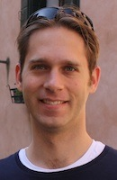

David S. Mandell Freeman
|

|
David Mandell Freeman
CWI
Science Park 123
1098 XG Amsterdam
Netherlands
|
Email: freeman@cwi.nl
Office: M237
Phone: (+31) (0)20.592.4054
|
I am a postdoctoral fellow at CWI, Amsterdam and Universiteit Leiden under the supervision of Ronald Cramer. I am supported by a National Science
Foundation International Research Fellowship, with additional support from the Office of Multidisciplinary Activities in the NSF Directorate for Mathematical and Physical Sciences.
Current Research
I am
interested in number theory and arithmetic geometry with applications
to
cryptography. Specific interests include elliptic and hyperelliptic
curve
cryptography, pairing-based systems, and multi-party computation.
Amongst my current research projects
are:
- Signatures for network coding. (Slides from a
recent talk.)
- Constructing pairing-friendly abelian varieties.
- Public-key cryptosystems based on pairings.
- "Alternative" pairings in cryptography.
I received my Ph.D. in Mathematics from the University of California, Berkeley. My dissertation is now available. My Ph.D. advisors were
Ken Ribet (UC Berkeley)
and
Ed Schaefer (Santa
Clara
University).
From June to November 2008 I was a postdoctoral scholar in the Applied Cryptography Group at Stanford University, under the
supervision of Dan Boneh.
I will be returning to Stanford in January 2010.
My research at Stanford is supported by a National Science
Foundation Mathematical Sciences Postdoctoral Research Fellowship.
Here
are my curriculum vitae and travel schedule.
Publications,
Presentations, and
Preprints
Papers Published or Submitted
- On the security of
pairing-friendly abelian varieties over non-prime fields (with N.
Benger and M. Charlemagne). To appear in Pairing 2009 (Palo Alto, CA,
August 2009).
- Signing a subspace: Signatures for network coding (with
D. Boneh, J. Katz, and B. Waters). In Public
Key Cryptography --- PKC 2009 (Irvine, CA, March 2009), Springer LNCS 5443
(2009), 68-87.
- A generalized Brezing-Weng method for constructing
pairing-friendly ordinary abelian varieties. In Pairing-Based Cryptography -- Pairing 2008
(Egham, United Kingdom, September 2008), Springer LNCS 5209 (2008), 146-163. Additional examples.
- Abelian varieties with prescribed embedding degree
(with P. Stevenhagen and M. Streng). In Algorithmic Number Theory Symposium -- ANTS-VIII
(Banff, Canada, May 2008), Springer LNCS 5011 (2008), 60-73.
- Constructing pairing-friendly genus 2
curves with ordinary Jacobians. In Pairing-Based Cryptography -- Pairing
2007 (Tokyo, Japan, July 2007), Springer LNCS 4575, (2007), 152-176.
- Computing endomorphism rings of Jacobians of genus 2
curves over finite fields (with K. Lauter). Symposium on Algebraic Geometry
and its Applications (Papeete, Tahiti, May 2007), World Scientific, 2008, 29-66.
- A taxonomy of pairing-friendly elliptic
curves (with M. Scott and E. Teske). To appear in Journal of
Cryptology.
- Constructing pairing-friendly elliptic curves with
embedding degree 10. Algorithmic
Number Theory Symposium -- ANTS-VII (Berlin, Germany, July 2006), Springer LNCS
4076 (2006), 452-465.
- The isoperimetric problem on singular surfaces (with A.
Cotton, A. Gnepp, T. Ng, J. Spivack, C. Yoder). Journal of the Australian
Mathematical Society 78:2 (April 2005) 167-199.
- The double bubble problem in spherical and hyperbolic
space (with A. Cotton). International Journal of Mathematics and Mathematical
Sciences 32:11 (15 Dec 2002), 641-699.
Conference Presentations
- Signing a linear subspace: Signatures for Network
Coding. IPAM Securing Cyberspace Reunion Conference, Lake Arrowhead, CA, June 2009.
- Constructing abelian varieties for
pairing-based cryptography. Invited talk at Workshop
on Pairings in Arithmetic Geometry and Cryptography, Essen, Germany,
May 2009.
- A generalized Brezing-Weng method for constructing
pairing-friendly ordinary abelian varieties. Pairing 2008, Egham, United Kingdom, September
2008.
- Constructing abelian varieties for
pairing-based cryptography. Invited talk at Computational Number
Theory Workshop, Foundations of
Computational Mathematics 2008, Hong Kong, June 2008.
- Implementing the genus 2 CM
method. Invited talk at AMS Special Session on Low Genus Curves and
Applications, AMS-MAA
Joint Mathematics Meetings, San Diego, CA, January 2008.
- Constructing pairing-friendly
genus 2
curves with ordinary Jacobians. Paring 2007, Tokyo,
Japan,
July 2007.
- Constructing Pairing-Friendly
Elliptic Curves for Cryptography (Part
1, Part 2). Invited talk at the
2nd KIAS-KMS Summer Workshop
on Cryptography, Seoul, Korea, June 2007.
- Methods for constructing
pairing-friendly elliptic
curves. Invited talk at the
10th Workshop on Elliptic Curves in Cryptography (ECC
2006),
Toronto,
Canada, September 2006.
-
Constructing pairing-friendly
elliptic curves with embedding degree
10. ANTS-VII,
Berlin,
Germany, July 2006.
Other Papers
Courses and
Teaching (at Berkeley)
In Fall 2007 I was a Graduate Student Instructor for Math 16a, taught by Jack
Wagoner. Section web page.
In Fall 2005 I was a Graduate
Student Instructor for Math 1a, taught by Vaughan Jones.
Section web page.
I took (and passed) my qualifying exam on May 12, 2005. Here is my syllabus. In theory I know everything on it.
J'ai réussi à l'examen français du
département des maths en 2003. Ich habe die Deutsche Prüfung
der mathematischen Abteilung in 2006 bestanden.
Other
activities
- UC Berkeley University Chorus.
-
University of California Alumni
Chorus.
- Studentenkoor
Amsterdam.
- Cal Cycling.
- Harvard Radio Broadcasting
(WHRB).
- See what I'm doing in my spare time.
- Fact Tree
Enterprises web sites:
- ClassicalCDGuide.com: This site
recommends classical
music CDs, with lists of the Top 10 CDs and Top 20
CDs, and
recommendations by composer, era, and genre. The site is very
extensive,
and the reviews are extremely detailed. Great for a beginner or
someone
looking to expand his or her
collection!
- SailingCourseGuide.com:
This
guide provides general
advice for anyone in the U.S. who wants to sign up
for a sailing course,
including tips on how to choose between schools and
warning signs of
problematic programs.
- SpainAdventure.com:
This
site guides prospective study
abroad students through the wonderful
possibilities of studying Spanish in
Spain and provides tips on choosing a
destination, finding a
school, and having a good time.
Last modified: Mon 4 May 2009